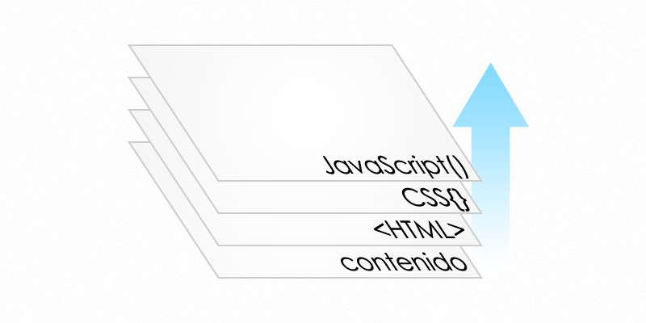

Manual de Javascript, desde cero hasta lo más avanzado del lenguaje.
Para entender Javascript es necesario conocer su historia y como surgió, apareciendo como una necesidad en el creciente auge de internet de los años 90. En esta época, las páginas Web se estaban haciendo cada vez más complejas y se veía necesario el poder interactuar con ciertas acciones del usuario. Por otro lado, todavia las comunicaciones erán lentas y en ocasiones, como en los formularios de registro que cada vez eran tambien más y más complejos y que cuando se necesitaba validarlos, esperar una respuesta de vuelta del servidor, podía llegar a ser una operación eterna.
Por estos motivos fue surgiendo la necesida de un lenguaje que se ejecutase en el cliente y que fuese capaz de interactuar con el usuario. Java fue el primero en hacerlo y con la creación applets que se ejecutaban en los navegadores como complementos se logró. No obstante, se necesitaba algo más sencillo y fue Netscape quien inicio el desarrollo de un lenguaje de script que se ejecutaba directamente en su navegador. Así nacio LiveScript, aunque poco le duro el nombre, ya que al poco tiempo y sin llegarse a lanzar, Netscape firmo una alianza con Sun, creador de Java, para el desarrollo de este nuevo. Así nació finalmente Javascript, aunque hay que recalcar que Javascript y Java no tienen nada que ver.
En Netscape 2.0 se incluyo la primera versión de Javascript. Por aquella época ya habia comenzado lo que se conocio como la guerra de los navegadores entre Microsoft y Netscape, por lo que Microsoft no tardo en sacar su propio lenguaje para su navegador Internet Explorer y lo llamo JScript, que era practicamente una reproducción.
En 199X Netscape presenta a la ECMA su lenguaje Javascript para la estandarización, el cual fue aprobado por la ECMA262 y estandarizado bajo el nombre ECMAScript.
Debemos considerar que una pagina Web esta formada por cuatro capas: contenido (los textos con la información), estrucctura (Html), estilos (Css) y acciones (Javascript). La siguiente figura ilustra esa estructura
Javascript es un lenguaje interpretado y no compilado, por lo que para crear código javascript nos servirá cualquier editor de texto. Adicionalemnte, necesitaremos otras herramientas para la depuración de los scripts y herramientas para la realización de pruebas de nuestro codigo.
Herramientas de depuración: algunos de los navegadores modernos cuentas con sus propias herramientas de depuración. Tambien existen plugins para los navegadores que amplian las posibilidades como por ejemplo firebug,
Herramientas de pruebas: se dedicará un capitulo exclusivamente a la realización de pruebas y aprenderemos a crear nuestro propio validador. Tambien veremos otras herramientas con las que realizar todo tipo de pruebas incluidas para operaciones asíncronas.
Javascript esta influenciado por otros lenguajes como C, por lo que su sintaxis es muy similar en cuanto a la declaración de varibles, operadores e instrucciones.
La declaración de variables se hace mediante var y el nombre de la variable, en Javascript no se especifica el tipo, el tipo de varible es tomado segun el valor asignado.
var a = "un texto"; //cadena
var b = 8; //entero
var c = true; //booleano
var d = {}; //objeto
El ambito de una variable representa el espacio desde el cual esa variable es accesible.
En Javascript, el ámbito de las variables no esta definido por los bloques sino por la funciones donde están definidas.
En Javascript se definen operadores aritméticos y de comparación:
| Operador | Operación | Descripción |
|---|---|---|
+ |
Adición | suma de dos variables |
- |
Sustracción | resta de dos variables |
* |
Multiplicación | multiplicación de dos variables |
/ |
División | división de dos variables |
% |
Módulo de división | asigna a total el resto de la división de las dos variables |
la siguiente tabla muestra los operadores comprativos
| Operador | Significado | Descripción |
|---|---|---|
> |
Mayor que | un valor es mayor que otro |
< |
Menor que | un valor es menor que otro |
== |
Igual a | un valor es igual que otro |
!= |
Distinto de | un valor es distinto que otro |
>= |
Mayor o igual a | un valor es mayor o igual que otro |
<= |
Menor o igual que | un valor es menor o igual que otro |
=== |
Idéntico a | un valor es estrictamente igual que otro. true==="true" devolvera false |
!== |
No idéntico a | un valor no es estrictamente igual a otro |
!! |
Los condicioneles en Javascript
El condicional if else se declara de la siguiente forma:
if(condicion){
//acciones
}
elseif(condicion){
//acciones
}
else{
//acciones
}
En Javascript como en otros lenguajes, tambien existe el operador tenerario. Su construcción es igual a como se hace en PHP. En el siguiente ejemplo se define una varible a y se le asigna como valor valor1 si se cumple condicion, si no se cumple tomará valor2:
var a = condicion ? valor1 : valor2;
var c = a > b ? valor1 : valor2;
En el segundo ejemplo, c tomará el valor valor1 si a es mayor que b y tomara el valor valor2 en caso contrario.
Con switch podemos definir diferentes bloques que se ejecutaran dependiendo del valor de una variable:
switch (variable){
case (valor1):
//acciones
break;
case (valor2):
//acciones
break;
default:
//acciones
break;
}
Los bucles en Javascript
El bucle for se crea como en la mayoria de los lenguajes:
for (var i=0; i<10; i++){
//acciones
}
En Javascript tambien existe el bucle do while, que se define de la siguiente forma:
do{
//acciones
}while(condicion);
Las funciones en Javascript son vitales y son consideradas un objeto de primera clase. Las funciones pueden declararse de varias formas, veámoslas;
function miFunction(a, b){
return a+b;
}
console.log(miFunction(1,2));
Hemos invocado la función miFunction con dos argumentos, la función miFunction recibe dos parámetros: a y b.
Toda función recibe, ademas de los parametros especificados, dos parametros adiciones: arguments y el ámbito en el cual es invicada la función. El parámetro arguments es una especie de array (no puede considerarse un array ya que no posee ciertos metodos que tienen todos los arrays, como por ejemplo push) que contiene todos los argumentos con los que ha sido invocada la función. En el ejemplo anterior, al invocar miFunction(1,2), arguments contendria dos elementos con los valores 1 y 2.
El DOM (Document Object Model) es API para interactuar con la estructura de un documento y permitir su modificación.
El BOM (Browser Object Model) permite la manipulación de la ventana del navegador.
Un evento tiene lugar cuando se produce una acción: el usuario hace click, se envia un formulario o cuando cambia de tamaño la ventana el navegador.
Las expresiones regulares y su manejo son muy importantes en Javascript y serán muy utiles en las operaciones de comprobación, selección de elementos del DOM y otras acciones que necesitemos realizar.
Todo ninja de probar sus hazañas y demostrar que son ciertas, para ello es necesario la realización de pruebas y tests unitarios de nuestros scripts.
Vamos a crear un nuestro propia libreria para la realización de pruebas. Podemos encontrar varios frameworks para creación de tests, entre los que se destacan QUnit.